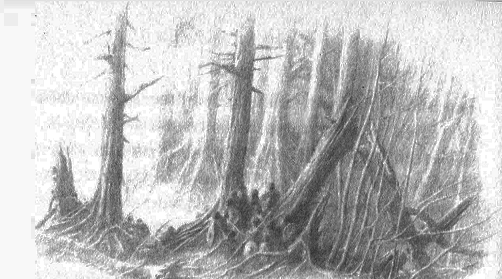

16
Artık Glaurung’un gücü ve şerri hızla büyümekteydi; orkları çevresine toplamış, bir ejderha-kral gibi hüküm sürüyordu ve ele geçirdikleri tüm Nargothrond diyarı onun hükmü altındaydı. Ve Turambar’ın ormancılar arasında yaşadığı bu üçüncü sene sona ermeden, Glaurung onların bir süreliğine huzur bulmuş topraklarına saldırmaya başladı; çünkü gerçekten de, Glaurung ve efendisi, Brethil’de özgür insanlardan, Kuzey’in gücüne meydan okuyan Üç Ev’den kalanların yaşadığını iyi biliyordu. Ve buna katlanamıyorlardı; çünkü Morgoth’un amacı Beleriand’ın tamamını zapt etmek ve köşe bucak aramaktı, böylece hiçbir delikte, hiçbir sığınakta ona kul olmayan biri kalmayacaktı. Böylece, Glaurung Túrin’in nerede saklandığını tahmin etse de, bazılarının savunduğu gibi, Túrin gerçekten de bir süreliğine onu takip eden şerrin gözünden saklanmayı başarmış olsa da, aslında pek fark etmezdi. Çünkü zaman içinde Brandir’in öğütleri boşa çıkacaktı ve sonunda Turambar iki seçenekle karşı karşıya kalacaktı: ya bulunana kadar boş boş oturacaktı ve sıçan gibi deliğinden çıkarılacaktı; ya da yakında savaşmaya gidecekti ve kendini gösterecekti.
Ama orkların gelişine dair haberler Ephel Brandir’de ilk duyulduğunda, savaşa gitmedi ve Níniel’in dileklerine boyun eğdi. Çünkü Níniel şöyle diyordu: “Bana söz verdiğin zamanki gibi, evlerimiz saldırıya uğramadı. Orkların sayısının çok olmadığı söyleniyor. Ve Dorlas, sen gelmeden önce de bu tür çatışmaların nadir olmadığını ve ormancıların onları uzak tuttuğunu söyledi bana.”
Ama ormancılar alt edildi, çünkü bu orklar daha aşağılık bir cinsti, haşin ve sinsiydiler; ve gerçekten de, Brethil Ormanı’nı istila etme amacıyla gelmişlerdi, önceki gibi başka göreve giderken ya da küçük çeteler halinde avlanırken ormanın kıyısına uğramamışlardı. Bu yüzden, Dorlas ve adamları kayıp vererek geri püskürtüldüler ve orklar Teiglin’i aşıp, ormanın derinliklerine girdiler. Ve Dorlas Turambar’a geldi, yaralarını gösterdi ve şöyle dedi: “Bak, beyim, öngördüğüm gibi, sahte bir barıştan sonra, ihtiyaç zamanı geldi bize. Yabancı değil, halkımızdan biri sayılmak istemedin mi? Bu tehlike seninle de ilgili değil mi? Çünkü, orklar topraklarımızda biraz daha ilerlerse, evlerimiz saklı kalamayacak.”
Bunun üzerin Turambar kalktı ve kılıcı Gurthang’ı alıp savaşa gitti ve ormancılar bunu öğrendiğinde iyice cesaretindiler ve onun çevresine toplandılar, öyle ki, yüzlerce kişiden oluşan bir gücü oldu. Sonra ormanda ava çıktılar ve orada dolanan bütün orkları öldürüp, Teiglin Geçitlerinin yakınındaki ağaçlara astılar. Ve onlara karşı yeni bir ordu geldiğinde onu tuzağa düşürdüler ve hem ormancıların kalabalıklığına, hem de Kara Kılıç’ın dehşetine hazırlıksız yakalanan orklar bozguna uğradılar ve çoğu öldürüldü. Sonra ormancılar leşleri yığıp, Morgoth’un askerlerini yığın yığın yaktılar ve intikamlarının dumanı kara kara gökyüzüne yükseldi ve rüzgar onu alıp batıya sürükledi. Ama pek az canlı bu haberlerle Nargothrond’a gitti.
Glaurung’un gazabı gerçekten de büyüktü; ama bir süre yerinden kıpırdanmadı ve işittiklerini düşündü. Böylece kış huzur içinde geçti ve insanlar şöyle dedi: “Brethil’in Kara Kılıcı gerçekten büyük, çünkü tüm düşmanlarımız alt edildi.” Ve Níniel rahatladı, Turambar’ın ününe sevindi; ama Turambar düşünceliydi ve içten içe şöyle diyordu: “Kalıp döküldü. Şimdi sınav geliyor ya böbürlenmem haklı çıkacak, ya da tamamen başarısız olacak. Daha fazla kaçmayacağım. Gerçekten de Turambar olacağım, ve kendi iradem ve başarımla, kaderimi alt edeceğim —ya da öleceğim. Ama yaşasam da ölsem de, en azından Glaurung’u öldüreceğim.”
Yine de huzursuzdu ve cüretkar adamlarını uzaklara, keşfe gönderdi. Zira, gerçekten de, tek kelime edilmese de, artık işleri kendi dilediği gibi, Brethil’in beyiymiş gibi idare ediyordu ve kimse Brandir’e kulak asmıyordu.
Bahar umutla geldi ve insanlar işlerinin başında şarkı söylüyorlardı. Ama o bahar Níniel gebe kaldı ve sararıp soldu, tüm mutluluğu karardı. Ve kısa süre sonra, Teiglin’in ötesine giden insanlar, ovadaki ormanlarda, Nargothrond tarafında büyük bir yangın olduğu haberini getirdi ve insanlar bunun ne olabileceğini merak ettiler.
Ama fazla zaman geçmeden başka haberler geldi: yangınlar kuzeye doğru ilerliyordu ve onları Glaurung çıkarıyordu. Çünkü Nargothrond’dan çıkmıştı ve bir iş peşindeydi. Sonra, daha aptal ve daha iyimser insanlar şöyle dedi: “Ordusu yok edildi ve sonunda doğru yolu gördü ve geldiği yere dönüyor.” Diğerleri ise, “Bize bulaşmadan geçip gideceğini umalım,” dediler. Ama Turambar böyle bir umut beslemiyordu ve Glaurung’un onu aramaya geldiğini biliyordu. Bu yüzden, Níniel yüzünden aklından geçenleri belli etmese de, gece gündüz ne yapması gerektiğini düşünüyordu; ve bahar yaza döndü.
Bir gün, iki adam Ephel Brandir’den dehşet içinde döndüler, çünkü Büyük Solucan’ı görmüşlerdi. “Gerçekten de, beyim,” dediler, “Teiglin’e yaklaşıyor ve başka yana dönmüyor. Büyük bir yangının ortasında uzanmıştı ve çevresinde ağaçlar tütüyordu. Kokusuna dayanmak imkansızdı. Bıraktığı pis izin ta Nargothrond’a kadar uzandığını düşünüyoruz, hem de hiç sapmadan, doğrudan buraya gelen bir çizgi halinde. Ne yapmalı?”
“Pek az şey,” dedi Turambar, “ama o pek az şeyin ne olacağını düşündüm. Getirdiğiniz haberler bana dehşet değil umut verdi; çünkü gerçekten de dediğiniz gibi düz gidiyorsa, yolundan sapmıyorsa, sağlam yürekler için bir fikrim var.”
Adamlar merak ettiler, çünkü o anda Turambar daha fazla konuşmadı, ama onun azimli tavrından cesaret aldılar.
Teiglin Irmağı şu şekilde akıyordu. Ered Wethrin’den akarken Narog kadar hızlıydı, ama başta alçak kıyılar arasından geçiyor, geçitlerden sonra diğer derelerden güç alıyor, Brethil Ormanı’nı barındıran yaylaların eteklerinde kendine bir yatak oyuyordu. Bundan sonra, kenarları yüksek kaya duvarlarına benzeyen derin vadilerden geçiyordu, ama yatağına hapsedilmiş sular büyük güç ve gürültüyle akıyordu. Ve orada, Glaurung’un yolunun hemen üzerinde, Celebros adlı kolun hemen kuzeyinde, en dar olmasa da en derin boğazlardan biri duruyordu. Bu yüzden Turambar, kenardan ejderhanın hareketlerini izlemek üzere, üç yürekli adamını oraya gönderdi; ama kendisi atını, haberlerin onu çabucak bulabileceği ve kendisinin uzakları görebileceği, yüksek Nen Girith çağlayanına sürecekti.
Ama ilk önce, ormancıları Ephel Brandir’de bir araya topladı ve onlara şöyle dedi: “Brethil insanları, ölümcül bir tehlike bizi buldu ve ancak büyük yüreklilikle geri çevrilebilir. Ama bu meselede sayımız pek az işe yarar; kurnazlığımızı kullanmalıyız ve talihimizin iyi gideceğini ummalıyız. Ejderhaya, karşımızda bir ork ordusu varmış gibi, bütün gücümüzle saldırırsak, ölümüne saldırmamız ve karılarımızı, ailelerimizi savunmasız bırakmamız gerekir. Bu yüzden ben, sizin burada kalmanız ve savaşmaya hazırlanmanız gerektiğini söylüyorum. Çünkü eğer Glaurung gelirse, burayı terk etmeniz ve dört bir yana dağılmanız gerekir; böylece bazıları kaçıp hayatta kalabilir. Çünkü, elinden geliyorsa, burayı ve gördüğü her şeyi yok edecektir; ama daha sonra burada yaşamayacaktır. Tüm hâzinesi Nargothrond’da ve orada, güven içinde yatıp büyüyebileceği derin salonlar var.”
Bunun üzerine insanlar dehşete düştüler ve moralleri fena bozuldu, çünkü Turambar’a güveniyorlardı ve daha umutlu sözler beklemişlerdi. Ama o şöyle dedi: “Hayır, en kötüsü bu. Öğütlerim ve talihim iyi çıkarsa, gerçekleşmeyecektir de. Çünkü bu ejderhanın yenilmez olduğuna inanmıyorum, ama seneler içinde gücü ve kötülüğü büyüyor. Onun hakkında biraz bilgim var. Gücü, ne kadar büyük olursa olsun, vücudunun kudretinden çok içinde yaşayan habis ruhtan geliyor. Benim ve beni dinleyenlerin çoğunun henüz çocuk olduğu Nirnaeth senesinde savaşan birileri tarafından anlatılan şu hikayeye kulak verin. O meydanda, cüceler ona direnmişler ve Belegostlu Azaghâl onu öyle derin yaralamış ki, Angband’a kaçmak zorunda kalmış. Ama burada, Azaghâl’ın bıçağından daha keskin ve daha uzun bir diken var.”
Ve Turambar Gurthang’ı kınından çekip başının üzerine kaldırdı ve izleyenlere, Turambar’ın elinden metrelerce yükseğe bir alev sıçramış gibi geldi. Büyük bir tezahürat kopardılar: “Brethil’in Kara Dikeni”.
“Brethil’in Kara Dikeni,” dedi Turambar: “Ondan korksa iyi olur. Çünkü, şunu bilin: bu ejderhanın (ve anlatılanlara göre dölünün tamamının) kaderi öyle ki, kemikten zırhı ne kadar büyük olursa olsun, demirden de sert olsa bile, altı yılan karnı gibi olmak zorunda. Bu yüzden, Brethil insanları, şimdi ben, elimden geldiği şekilde, Glaurung’un karnını aramaya gidiyorum. Kimler benimle geliyor? Birkaç güçlü kol ve daha da güçlü yürek lazım bana.”
Bunun üzerine Dorlas öne çıktı ve şöyle dedi: “Ben seninle gelirim, beyim: çünkü düşmanı beklemektense öne çıkmayı her zaman tercih etmişimdir.”
Ama diğerleri çağrıya yanıt vermekte o kadar acele etmediler, çünkü Glaurung’un dehşeti üstlerine çökmüştü ve onu gören izcilerin hikayesi yayılmış, ağızdan ağıza büyümüştü. Bunun üzerine Dorlas bağırdı: “Kulak verin, Brethil insanları, bu zamanın şerri karşısında Brandir’in öğütlerinin nafile olduğu artık çok iyi biliniyor. Saklanarak kurtulamayız. Haleth Evi mahçup olmasın diye, Handir’in oğlunun yerini alacak kimse yok mu?” Gerçekten de toplantıda, beyin yüksek makamında oturmakta olan, ama kimsenin aldırış etmediği Brandir bu şekilde küçük görüldü ve yüreği acıdı; çünkü Turambar Dorlas’ı terslemedi. Ama Brandir’in akrabalarından Hunthor ayağa kalktı ve şöyle dedi: “Talihsiz bir kaza eseri yüreğinden geçeni bacaklarına yaptıramayan beyimizi utandıracak şekilde konuşarak kötü iş yapıyorsun, Dorlas. Dikkat et, yoksa bir noktada aksi de senin başına gelebilir! Hem, hiç kulak asılmamışken, onun öğütlerinin nafile olduğu nasıl söylenebilir? Onun kulu olan sen, hep hiçe saydın onları. Sana diyorum ki, Glaurung Nargothrond’a geldiği gibi buraya da geliyor, çünkü yaptıklarımız, onun korktuğu gibi, yerimizi ele verdi. Ama madem bu keder geliyor artık, senin izninle, Handir’in oğlu, Haleth Evi adına ben gideceğim.”
Bunun üzerine Turambar, “Üç kişi yeter.'” dedi. “Siz ikinizi alacağım. Ama, beyim, seni küçük görmüyorum. Bak! Acele gitmemiz gerek ve görevimiz kuvvetli vücutlar istiyor. Bana göre senin yerin halkının yanı. Çünkü sen bilgesin ve şifacısın; hem, fazla zaman geçmeden bilgeliğe ve şifaya büyük ihtiyaç olabilir.” Ama, güzel söylenmiş olsa da, bu sözler Brandir’in içini daha da fena acıttı ve Hunthor’a şöyle dedi: “Git o halde, ama benim iznimle değil. Çünkü bu adamın üzerinde bir gölge var ve o gölge sizi kötülüğe götürecek.”
Artık Turambar gitmekte acele ediyordu; ama veda etmek için Níniel’e gittiğinde, Níniel acı acı ağlayarak sarıldı ona. “Gitme, Turambar, yalvarırım!” dedi. “Kaçtığın gölgeye meydan okuma! Hayır, hayır, kaçmaya devam et, beni de yanına al, uzaklara gidelim!”
“Çok sevgili Níniel,” diye yanıt verdi Turambar, “sen ve ben daha fazla kaçamayız. Bu diyarda kısılı kaldık. Hem, bize dostluklarını sunan bu halkı terk edip kaçsam bile, seni ancak evsiz yabana, ölümüne ve çocuğumuzun ölümüne götürebilirim. Bizimle Gölge’nin erimindeki topraklar arasında yüz fersah var. Ama cesaretlen, Níniel. Çünkü sana diyorum ki: seni ve beni ne bu ejderha, ne de kuzeyden gelen başka düşmanlar öldürebilecek.” Bunun üzerine Níniel ağlamayı bıraktı ve sustu, ama ayrılırlarken öpücüğü soğuktu.
Sonra Turambar, Dorlas ve Hunthor ile birlikte aceleyle Nen Girith’e gitti ve oraya vardıklarında güneş batıyor, gölgeler uzuyordu; ve izcilerin son iki tanesi orada onları bekliyordu.
“Tam zamanında geldiniz, beyim,” dediler. “Çünkü ejderha geldi ve biz ayrılırken Teiglin’in kenarına varmıştı bile ve suyun üzerinden pis pis bakıyordu. Her zaman gece yol alıyor ve bu durumda, yarın sabah şafaktan önce saldırı bekleyebiliriz.”
Turambar Celebros çağlayanlarının üzerinden uzaklara baktı ve güneşin batmakta olduğunu, ırmağın kıyılarından yükselen kara dumanları gördü. “Kaybedecek zaman yok,” dedi; “ama bu haberler iyi. Çünkü ben onun aranacağından korkuyordum; kuzeye geçip geçitlere ve böylece düz ovadaki eski yola gelseydi, umudumuz kalmazdı. Ama şimdi, gururunun ve şerrinin öfkesi onu dosdoğru güdüyor.” Ama daha konuşması bitmeden kuşkulandı ve kendi kendine düşündü: “Yoksa, böylesine habis ve düşük bir yaratık, tıpkı orklar gibi, geçitlerden kaçınıyor mu? Haudh-en-Elleth! Finduilas hâlâ kaderimle aramda mı duruyor?”
Sonra yoldaşlarına döndü ve şöyle dedi: “Şimdi bizi şu görev bekliyor. Bir süre daha beklemeliyiz, çünkü bu durumda, çok erken davranmak da, çok geç davranmak kadar kötü olur. Alacakaranlık çöktüğünde, gizlice aşağıya, Teiglin’e inmeliyiz. Ama dikkatli olun! Çünkü Glaurung’un kulakları da gözleri kadar keskindir ve gözleri ölümcüldür. Fark edilmeden ırmağa varabilirsek, yatağına inmeli, suyu geçmeli, böylece harekete geçtiğinde seçeceği yola ulaşmalıyız.”
“Ama nasıl bu şekilde gelebilir?” dedi Dorlas. “Çevik olabilir, ama o büyük bir ejderha, nasıl bir yamacı inip karşısından çıkabilir, arka tarafı inişi bitirmeden nasıl ön tarafı tırmanabilir? Hem, bunu yapabiliyorsa, aşağıdaki vahşi sularda olmak bizim ne işimize yarayacak?”
“Belki öyle yapar,” diye yanıt verdi Turambar, “ve eğer yaparsa, gerçekten de bizim için iyi olmaz. Ama onun hakkında öğrendiklerimize ve şimdi yattığı yere bakarak, ben amacının farklı olduğunu düşünüyorum. Cabed-en-Aras’ın kenarına geldi, eskiden oradan, Haleth’in avcılarından kaçan bir geyiğin sıçradığını anlatmıştın. Ejderha o kadar büyük ki, bence kendini oradan atmayı deneyecek. Tek umudumuz bu ve ona güvenebiliriz.”
Bu sözleri duyan Dorlas’ın yüreği burkuldu; çünkü tüm Brethil diyarını en iyi o bilirdi ve Cabed-en-Aras gerçekten de amansız bir yerdi. Doğu tarafında, kırk fit yüksekliğinde, çıplak, ama tepesinde ağaçlar bitmiş, dik bir uçurum vardı; diğer taraftaki kıyı daha az dik ve daha az yüksekti, sarkık ağaçlar ve dallarla kaplıydı, ama arada kalan su kayaların arasında vahşice akıyordu ve cesur, ayağı sağlam biri gündüz oradan geçebilecek olsa da, geceleyin geçmeye çalışmak tehlikeli olurdu. Ama Turambar’ın görüşü buydu ve ona karşı çıkmak faydasızdı.
Bu yüzden, alacakaranlıktan önce yola çıktılar ve doğrudan ejderhaya doğru gitmeyip, ilk önce geçitlere giden patikaya döndüler; sonra, çok ilerlemeden, dar bir patikadan güneye döndüler ve Teiglin’in üzerindeki korulukların loşluğuna girdiler. Ve adım adım, sık sık durup dinleyerek Cabed-en-Aras’a yaklaştıklarında, yanık kokusu aldılar ve koku midelerini bulandırdı. Ama her şey hâlâ kıpırtısızdı ve yaprak kımıldamıyordu. Önlerinde, ilk yıldızlar doğuda ışıldamaya başlamıştı ve batıdaki son ışıkların önünde, solgun dumanlar dümdüz, hiç dalgalanmadan yükseliyordu.
Turambar gittikten sonra Níniel taş gibi, kıpırdamadan kalmıştı; ama Brandir yanına geldi ve, “Níniel,” dedi, “zorunlu olana dek en kötüsünden korkma. Ama ben sana beklemeni öğütlememiş miydim?”
“Öğütlemiştin,” diye yanıt verdi Níniel. “Ama şimdi bunun bana ne faydası olurdu? Çünkü aşk evlenmeden de tahammül edip acı çekebilir.”
“Bunu biliyorum,” dedi Brandir. “Ama evlenmek boşa değildir.”
“Hayır,” dedi Níniel. “Çünkü iki aydır onun çocuğunu taşıyorum. Ama bana, kaybetme korkum daha da ağırmış gibi gelmiyor. Seni anlamıyorum.”
“Ben de anlamıyorum,” dedi Brandir. “Yine de korkuyorum.”
“Ne teselli ama!” diye haykırdı Níniel. “Ama, Brandir, dostum: evli ya da değil, anne ya da değil, dehşetim dayanılmaz. Kaderin Efendisi kendi kaderiyle uzakta yüzleşmeye gitti, ben nasıl burada kalıp, iyi ya da kötü, haberlerin ağır ağır gelmesini beklerim? Bu gece belki de ejderha ile karşılaşacak, ben nasıl durur, otururum, o korkunç saatleri nasıl geçiririm?”
“Bilmiyorum,” dedi Brandir, “ama saatler bir şekilde geçmek zorunda, hem senin için, hem de onunla gidenlerin karıları için.”
“Bırak onlar yüreklerinin dilediğini yapsınlar!” diye bağırdı Níniel. “Ama kendi adıma, ben gidiyorum. Beyimin yüzleşeceği tehlike ile aramda miller olmayacak. Ben haberleri karşılamaya gideceğim!”
Brandir’in dehşeti onun sözleriyle daha da karardı ve Brandir haykırdı: “Seni engellemek elimden gelirse, böyle bir şey yapmayacaksın. Çünkü bu şekilde her şeyi tehlikeye atarsın. Arada uzanan miller, eğer işler kötüye giderse, kaçmak için vakit verir.”
“İşler kötü giderse, kaçmak istemeyeceğim,” dedi Níniel. “Hem, artık bilgeliğin nafile ve bana engel olamayacaksın.” Ve hâlâ Ephel’deki açıklıkta toplanmış bekleyen halkın önüne çıktı ve bağırdı: “Brethil insanları! Ben burada beklemeyeceğim. Beyim başarısız olursa, her tür umut yalan demektir. Ülkeniz ve ormanlarınız tamamen yanacak, evleriniz küle dönecek ve hiç kimse, hiç kimse kaçamayacak. Bu yüzden, neden burada oyalanalım? Ben haberleri ve kader her ne gönderiyorsa onu karşılamaya gidiyorum. Benim gibi düşünenler de benimle gelsin!”
Bunun üzerine, pek çok kişi onunla gitmeye gönüllü oldu: sevdikleri Turambar’la gittiği için Dorlas ile Hunthor’un karıları; Níniel’e acıyan ve onunla dost olmak isteyen diğerleri; ve ejderha söylentilerinin büyülediği, olanca yüreklilikleri ya da ahmaklıkları ile (şer hakkında pek az şey bildiklerinden), tuhaf ve görkemli işler göreceklerini düşünenler. Çünkü zihinlerinde Kara Kılıç öyle yücelmişti ki, pek az kişi, Glaurung’un onu alt edebileceğine inanıyordu. Bu yüzden, kısa süre sonra telaşla, büyük bir grup halinde, kavrayamadıkları bir tehlikeye doğru yola çıktılar; ve pek az dinlenerek yol alıp, sonunda, gece çökmeden hemen önce, bitkinlik içinde, Turambar’ın oradan ayrılmasından biraz sonra Nen Girith’e vardılar. Ama gece soğuktu ve pek çok kişi kendi düşüncesizliğine şaştı; ve orada kalan izcilerden Glaurung’un ne kadar yakına geldiğini ve Turambar’ın çılgınca amacını öğrendiklerinde, yürekleri dondu ve daha ileri gitmeye cesaret edemediler. Bazıları endişeli gözlerle Cabed-en-Aras’a doğru baktı, ama hiçbir şey göremiyor, çağlayanların soğuk gürültüsü hariç hiçbir şey duyamıyorlardı. Níniel uzağa oturmuştu ve şiddetle ürperiyordu.
Níniel ve yanındakiler gittikten sonra, Brandir kalanlara şöyle dedi: “Nasıl hor görüldüğüme, tüm öğütlerimin nasıl küçümsendiğine bakın! Size önderlik edecek başkasını seçin: çünkü burada, hem beyliğimden hem de halkımdan vazgeçiyorum. Bırakın Turambar ismen de beyiniz olsun, çünkü zaten tüm yetkemi ele geçirdi. Bir daha kimse, ne öğüt ne de şifa için beni aramasın!” Ve asasını kırdı. Kendi kendine şöyle düşündü: “Artık, Níniel’e duyduğum aşk dışında, hiçbir şeyim kalmadı: bu yüzden, akıllıca ya da ahmakça, o nereye giderse gitsin, ben de gitmeliyim Bu karanlık saatte hiçbir şey öngörülemez; ama, eğer yakında olursam, belki tesadüf eseri bir şerri ondan uzağa kovalayabilirim.”
Böylece, daha önce nadiren yapmış olsa da, bir kısa kılıç kuşandı, bastonunu aldı ve becerebildiğince hızla Ephel kapısından çıkıp, Brethil’in batısındaki bataklığa giden uzun yolda aksaya aksaya diğerlerinin peşinden gitti.